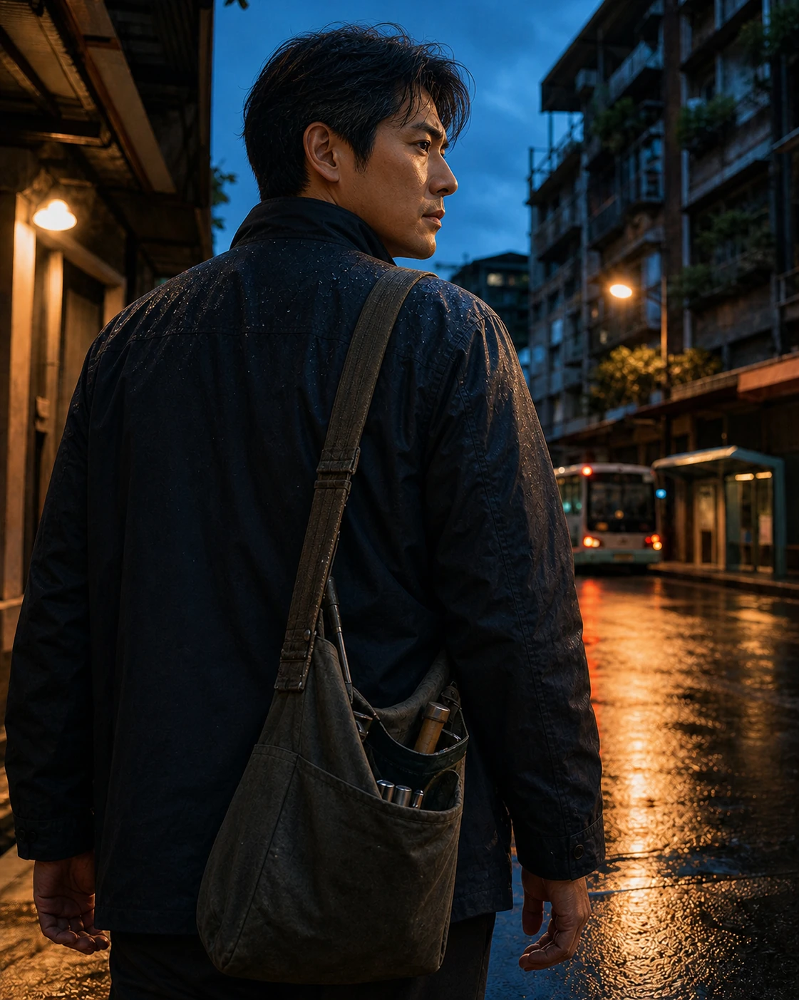

四十五歲的男人，還不會輕易承認自己上了年紀。
他依然走得很快，襯衫穿得整齊，出門以前也會站在鏡子前，把頭髮和衣領整理好。走進人群裡，他看起來從容、可靠，像是早已知道該怎麼處理生活裡的每一件事。
只是有些清晨，他坐在床沿的時間比以前久了一點。
不是不想起身，而是在睜開眼睛的那一刻，工作、家庭、父母、孩子，還有那些尚未解決的事情，已經先一步醒來，安靜地落在他的肩上。
男人的年紀，有時不是寫在臉上，而是留在肩膀。
年少時，那裡背著書包，也背著對未來的想像。後來，書包換成公事包、工具袋、採買回家的塑膠袋，或是一個在回程路上睡著的孩子。肩上的東西不斷改變，只有「不能放下」這件事，漸漸成了習慣。
年輕時，他相信只要足夠努力，就能得到想要的生活。走到人生中間才明白，努力有時不是為了得到，而是為了不讓身邊的人失去。
於是，他學會在最沒有答案的時候，對別人說：「我來處理。」
這句話說得太久，大家便真的相信他什麼都能處理。家裡有東西壞了，會先想到他；工作出了問題，別人等著他決定；父母的身體出現狀況，他得先裝作鎮定；孩子遇見挫折，他又把自己的不安收好，告訴對方不要怕。
他像一座橋，讓許多人放心地走過去。
可是很少有人停下來問，一座橋每天承受那麼多重量，會不會也有疲倦的時候。
中年男人的疲倦，不一定有明顯的聲音。
它可能藏在回家後仍沒有熄火的車裡，藏在洗澡時比平常更久的熱水裡，也可能藏在深夜客廳的一盞小燈下。他沒有特別想做什麼，只是暫時不想說話，也不想立刻回到任何一個角色裡。
那幾分鐘，他不是誰的丈夫、父親、兒子、主管或同事。
他只是一個普通的人。
一個也會迷惘，也會害怕失敗，有時需要被理解，卻不太知道該怎麼開口的人。

四十五歲，剛好站在人生的中間。
一邊是正在老去的父母，一邊是仍需要照顧的家庭；身後是一些來不及完成的夢，眼前則是不能輕易停下的日子。他不是沒有想過離開熟悉的軌道，只是每當回頭看見那些信任他的眼神，便又把念頭放回心裡。
人們常把男人的沉默當成堅強，再把他的堅強當成理所當然。
可是沉默有時不是力量，只是他找不到一個可以放心卸下重量的地方。他怕一開口，別人會覺得他脆弱；怕說了也沒有人懂；更怕自己好不容易維持住的生活，會因為一句「我真的累了」而鬆動。
這並不是要把所有沉默都寫成深情，也不是替傷人的脾氣尋找理由。疲倦不能成為傷害別人的藉口，責任也不該只落在某一種人的身上。只是我們或許可以承認，有些男人用了一生學習承擔，卻從來沒有人教過他，如何說出害怕、委屈和需要。
他也曾經是個少年。
也曾因為一首歌、一場雨、一個人的回頭而心動；也曾以為自己不會成為那個話不多、笑起來帶著疲倦的大人。歲月沒有突然改變他，那些變化只是在每一次不得不的選擇裡，一點一點留在身上。
肩膀因此成了一種無聲的記錄。
它記得孩子第一次趴在上面睡著的重量，記得父母老去後攙扶的重量，也記得工作、家庭與期待同時壓下來時，他仍努力站直的樣子。它甚至記得一些已經沒有人提起的夢。那些夢沒有真正消失，只是被摺好，收進生活很深的地方。
很多男人不擅長把愛說得漂亮，卻把它做進了日復一日的生活裡。那份愛可能是一趟接送、一盞修好的燈、一筆準時繳清的費用，或是一句聽起來很平常的「到家告訴我」。
可是再寬的肩膀，也有痠痛的時候；再穩的人，也會有站不住的夜晚。真正的體貼，不是再對他說一次「你要堅強」，而是替他留一個不必堅強的位置。
不急著逼他把故事說完，也不要求他立刻整理好情緒。只是倒一杯水，拉開一張椅子，讓他知道，有人看見了。
每個男人的肩膀，都有一個故事。
有些故事沒有名字，也未必會被完整說出口。但在某個平凡的晚上，我們仍可以輕輕拍一拍那雙肩膀，告訴他：這一次，你可以先坐下來。
不用急著證明自己還撐得住。